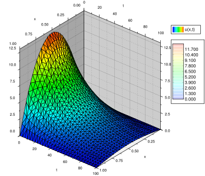
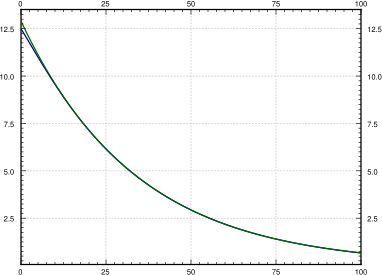

Recall that a partial differential equation or PDE is an equation containing the partial derivatives with respect to several independent variables. Solving PDEs will be our main application of Fourier series.
A PDE is said to be linear if the dependent variable and its derivatives appear at most to the first power and in no functions. We will only talk about linear PDEs. Together with a PDE, we usually specify some boundary conditions, where the value of the solution or its derivatives is given along the boundary of a region, and/or some initial conditions where the value of the solution or its derivatives is given for some initial time. Sometimes such conditions are mixed together and we will refer to them simply as side conditions.
We will study three specific partial differential equations, each one representing a general class of equations. First, we will study the heat equation, which is an example of a parabolic PDE. Next, we will study the wave equation, which is an example of a hyperbolic PDE. Finally, we will study the Laplace equation, which is an example of an elliptic PDE. Each of our examples will illustrate behavior that is typical for the whole class.
We start with the heat equation. Consider a wire (or a thin metal rod) of length \(L\) insulated along its length except at the endpoints. Let \(x\) denote the position along the wire and let \(t\) denote time. See Figure 4.15.
Let \(u(x,t)\) denote the temperature at point \(x\) at time \(t\text{.}\) The equation governing this setup is the so-called one-dimensional heat equation:
where \(k > 0\) is a constant (the thermal conductivity of the material). That is, the change in heat with respect to time at some point is proportional to the second derivative of the heat in the \(x\) direction—along the wire. This makes sense; if at a fixed \(t\) the graph of the heat distribution has a maximum (the graph is concave down and the second \(x\) derivative is negative), then heat should flow away from the maximum and so the \(t\) derivative should also be negative. Similarly at a minimum, heat wants to flow in.
We generally use a more convenient notation for partial derivatives. We write \(u_t\) instead of \(\frac{\partial u}{\partial t}\text{,}\) and we write \(u_{xx}\) instead of \(\frac{\partial^2 u}{\partial x^2}\text{.}\) With this notation the heat equation becomes
We must also have some side conditions on the boundaries of that region. We assume that the ends of the wire are either exposed and touching some body of constant heat, or the ends are insulated. If the ends of the wire are kept at temperature 0, then the conditions are
Let us see why that is so. If \(u_x\) is positive at some point \(x_0\text{,}\) then at a particular time, \(u\) is smaller to the left of \(x_0\) and higher to the right of \(x_0\text{.}\) Heat is flowing from high heat to low heat, that is, to the left. On the other hand, if \(u_x\) is negative, then heat is again flowing from high heat to low heat, that is, to the right. So when \(u_x\) is zero, we are at a point where heat is not flowing in either direction. In other words, \(u_x(0,t) = 0\) means no heat is flowing in or out of the wire at the point \(x=0\text{.}\)
We have two conditions along the \(x\)-axis as there are two derivatives in the \(x\) direction. These side conditions are said to be homogeneous (i.e. \(u\) or a derivative of \(u\) is set to zero).
The heat equation is linear as \(u\) and its derivatives do not appear to any powers or in any functions, and it is homogeneous—there is no term independent of \(u\text{.}\) Thus the principle of superposition still applies for the heat equation (without side conditions): If \(u_1\) and \(u_2\) are solutions and \(c_1\text{,}\)\(c_2\) are constants, then \(u = c_1 u_1 + c_2 u_2\) is also a solution.
Superposition preserves some side conditions. If \(u_1\) and \(u_2\) are solutions that satisfy \(u(0,t) = 0\) and \(u(L,t) = 0\text{,}\) and \(c_1\text{,}\)\(c_2\) are constants, then \(u = c_1 u_1 + c_2 u_2\) is still a solution that satisfies \(u(0,t) = 0\) and \(u(L,t) = 0\text{.}\) Similarly for the side conditions \(u_x(0,t) = 0\) and \(u_x(L,t) = 0\text{.}\) In general, superposition preserves all homogeneous side conditions.
The method of separation of variables is to try to find solutions that are products of functions of one variable. For the heat equation, we try to find solutions of the form
That the desired particular solution we are looking for is of this form is too much to hope for. What is perfectly reasonable to ask, however, is to find enough “building-block” solutions of the form \(u(x,t) = X(x)T(t)\) using this procedure so that the desired solution to the PDE is somehow constructed from these building blocks by the use of superposition.
We guess \(u(x,t) = X(x)T(t)\text{.}\) We will try to make this guess satisfy the differential equation, \(u_t = k u_{xx}\text{,}\) and the homogeneous side conditions, \(u(0,t) = 0\) and \(u(L,t) = 0\text{.}\) Then, as superposition preserves the differential equation and the homogeneous side conditions, we will try to build up a solution from these building blocks to solve the nonhomogeneous initial condition \(u(x,0) = f(x)\text{.}\)
This equation must hold for all \(x\) and all \(t\text{.}\) But the left-hand side does not depend on \(x\) and the right-hand side does not depend on \(t\text{.}\) Hence, each side must be a constant. Let us call this constant \(-\lambda\) (the minus sign is for convenience later). We obtain the two equations
The boundary condition \(u(0,t) = 0\) implies \(X(0)T(t) = 0\text{.}\) We are looking for a nontrivial solution, and so we can assume that \(T(t)\) is not identically zero. Hence \(X(0) = 0\text{.}\) Similarly, \(u(L,t) = 0\) implies \(X(L) = 0\text{.}\) We are looking for nontrivial solutions \(X\) of the eigenvalue problem \(X'' + \lambda X = 0\text{,}\)\(X(0) = 0\text{,}\)\(X(L) = 0\text{.}\) We have previously found that the only eigenvalues are \(\lambda_n = \frac{n^2 \pi^2}{L^2}\text{,}\) for integers \(n \geq 1\text{,}\) where eigenfunctions are \(\sin \left(\frac{n \pi}{L} x\right)\text{.}\) Hence, let us pick the solutions
That is, we find the Fourier series of the odd periodic extension of \(f(x)\text{.}\) We used the sine series as it corresponds to the eigenvalue problem for \(X(x)\) above. Finally, we use superposition to write the solution as
Why does this solution work? First note that it is a solution to the heat equation by superposition. It satisfies \(u(0,t) = 0\) and \(u(L,t) = 0\text{,}\) because \(x=0\) or \(x=L\) makes all the sines vanish. Finally, plugging in \(t=0\text{,}\) we notice that \(T_n(0) = 1\text{,}\) and so
Consider an insulated wire of length 1 whose ends are embedded in ice (temperature 0). Let \(k=0.003\) and let the initial heat distribution be \(u(x,0) = 50\,x\,(1-x)\text{.}\) See Figure 4.16. Suppose we want to find the temperature function \(u(x,t)\text{.}\) In particular, suppose we want to find when (at what time \(t\)) does the maximum temperature in the wire drop to one half of the initial maximum of 12.5.
Figure4.17.Plot of the temperature \(u(x,t)\) of the wire at position \(x\) at time \(t\) for \(0 \leq t \leq 100\text{.}\) Notice the side conditions \(u(0,t)=u(1,t)=0\) and how the exponential makes the temperature decay with time.
Finally, we answer the question about the maximum temperature. It is relatively easy to see that the maximum temperature at any fixed time is always at \(x=0.5\text{,}\) in the middle of the wire. The plot of \(u(x,t)\) confirms this intuition. If we plug in \(x=0.5\text{,}\) we get
For \(n=3\) and higher (remember \(n\) is only odd), the terms of the series are insignificant compared to the first term. The first term in the series is already a very good approximation of the function. Hence
The approximation gets better and better as \(t\) gets larger as the other terms decay much faster. We plot the function \(u(0.5,t)\text{,}\) the temperature at the midpoint of the wire at time \(t\text{,}\) and its approximation by the first term in Figure 4.18.
Figure4.18.Temperature at the midpoint of the wire (the bottom curve), and the approximation of this temperature by using only the first term in the series (top curve).
After \(t=5\) or so, it would be hard to tell the difference between the first term of the series for \(u(x,t)\) and the real solution \(u(x,t)\text{.}\) This behavior is a general feature of solving the heat equation. If you are interested in behavior for large enough \(t\text{,}\) only the first one or two terms may be necessary.
We get back to the question of when is the maximum temperature one half of the initial maximum temperature. That is, when is the temperature at the midpoint \(\nicefrac{12.5}{2} = 6.25\text{.}\) The graph suggests that the approximation by the first term will be close enough. We solve
We mention an interesting behavior of the solution to the heat equation. The heat equation “smoothes” out the function \(f(x)\) as \(t\) grows. For a fixed \(t\text{,}\) the solution is a Fourier series with coefficients \(b_n e^{\frac{-n^2 \pi^2}{L^2} k t}\text{.}\) If \(t > 0\text{,}\) then these coefficients go to zero faster than any \(\frac{1}{n^p}\) for any power \(p\text{.}\) In other words, the Fourier series has infinitely many derivatives everywhere. Thus even if the function \(f(x)\) has jumps and corners, then for a fixed \(t > 0\text{,}\) the solution \(u(x,t)\) as a function of \(x\) is as smooth as we want it to be.
Yet again we try a solution of the form \(u(x,t) = X(x)T(t)\text{.}\) By the same procedure as before, we plug into the heat equation and arrive at the following two equations:
At this point, the story changes slightly. The boundary condition \(u_x(0,t) = 0\) implies \(X'(0)T(t) = 0\text{.}\) Hence \(X'(0) = 0\text{.}\) Similarly, \(u_x(L,t) = 0\) implies \(X'(L) = 0\text{.}\) We want nontrivial solutions \(X\) of the eigenvalue problem \(X'' + \lambda X = 0\text{,}\)\(X'(0) = 0\text{,}\)\(X'(L) = 0\text{.}\) We previously found that the only eigenvalues are \(\lambda_n = \frac{n^2 \pi^2}{L^2}\text{,}\) for integers \(n \geq 0\text{,}\) where eigenfunctions are \(\cos \left( \frac{n \pi}{L} x\right)\) (we include the constant eigenfunction). We pick the solutions
Note in the graph that as time goes on, the temperature evens out across the wire. Eventually, all the terms except the constant die out, and you will be left with a uniform temperature of \(\frac{25}{3} \approx 8.33\) along the entire length of the wire.
In other words, \(\frac{a_0}{2}\) is the average value of \(f(x)\text{,}\) that is, the average of the initial temperature. As the wire is insulated everywhere, no heat can get out, no heat can get in. So the temperature tries to distribute evenly over time, and the average temperature must always be the same, in particular, it is always \(\frac{a_0}{2}\text{.}\) As time goes to infinity, the temperature goes to the constant \(\frac{a_0}{2}\) everywhere.
Consider a wire of length 2, with \(k=0.001\) and an initial temperature distribution \(u(x,0) = 50 x\text{.}\) Both ends are embedded in ice (temperature 0). Find the solution as a series.
Hint: Use the fact that \(u(x,t) = 100 x\) is a solution satisfying \(u_t = u_{xx}\text{,}\)\(u(0,t) = 0\text{,}\)\(u(1,t) = 100\text{.}\) Then use superposition.
Find the steady-state temperature solution as a function of \(x\) alone, by letting \(t \to
\infty\) in the solution from exercises Exercise 4.6.5 and Exercise 4.6.6. Verify that it satisfies the equation \(u_{xx} = 0\text{.}\)
Use separation variables to find a nontrivial solution to \(u_{xx} + u_{yy} = 0\text{,}\) where \(u(x,0) = 0\) and \(u(0,y) = 0\text{.}\) Hint: Try \(u(x,y) = X(x)Y(y)\text{.}\)
(challenging) Suppose that one end of the wire is insulated (say at \(x=0\)) and the other end is kept at zero temperature. That is, find a series solution of
\begin{equation}
\begin{array}{ll}
u_t = k u_{xx} & \qquad \text{for } \; 0 < x < L \text{ and } t > 0, \\
u_x(0,t) = u(L,t) = 0 & \qquad \text{for } \; t > 0, \\
u(x,0) = f(x) & \qquad \text{for } \; 0 < x < L .
\end{array}
\end{equation}
Express any coefficients in the series by integrals of \(f(x)\text{.}\)
(challenging) Suppose that the wire is circular and insulated, so there are no ends. You can think of this as simply connecting the two ends and making sure the solution matches up at the ends. That is, find a series solution of
\begin{equation}
\begin{array}{ll}
u_t = k u_{xx} & \qquad \text{for } \; 0 < x < L \text{ and } t > 0, \\
u(0,t) = u(L,t) , \quad
u_x(0,t) = u_x(L,t) & \qquad \text{for } \; t > 0, \\
u(x,0) = f(x) & \qquad \text{for } \; 0 < x < L .
\end{array}
\end{equation}
Express any coefficients in the series by integrals of \(f(x)\text{.}\)